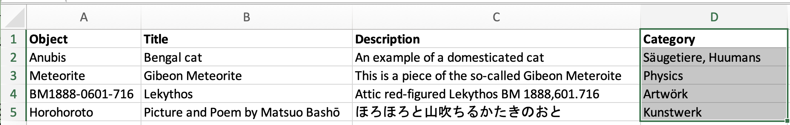
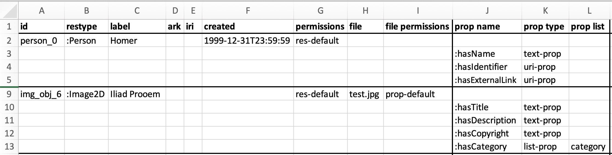
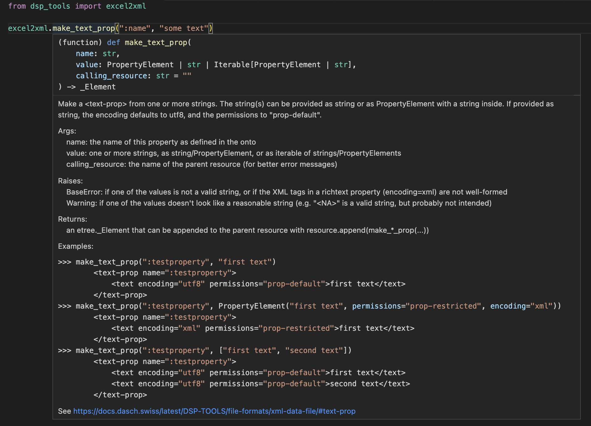

The excel2xml Module
Two Use Cases - Two Approaches
There are two kinds of Excel files that can be transformed into an XML file:
| structure | provenance | tool | example screenshot |
|---|---|---|---|
| custom structure | customer | module excel2xml |
 |
| DSP structure | DSP server | CLI command excel2xml |
 |
The first use case is the most frequent: The DaSCH receives a data export from a research project. Every project uses
different software, so every project will deliver their data in a different structure. The screenshot is just a
simplified example. For this use case, it is necessary to write a Python script that transforms the data from an
undefined state X into a DSP-conforming XML file that can be uploaded with dsp-tools xmlupload. For this, you need to
import the module excel2xml into your Python script.
The second use case is less frequent: In DaSCH we migrate data internally from one server to another. In this case, the
data already has the correct structure, and can automatically be transformed to XML.
This can be done with the CLI command excel2xml.
This page deals only with the first use case, the module excel2xml.
Module excel2xml: Convert a Data Source to XML
To demonstrate the usage of the excel2xml module,
there is a GitHub repository named 00A1-import-scripts.
It contains:
- a sample JSON project file
- sample data that fits the data model of the JSON project file
- a sample Python script that demonstrates how to use the module
excel2xml.
Navigate to https://github.com/dasch-swiss/00A1-import-scripts
and follow the steps described there.
The README will teach you some basics that will be necessary to work with excel2xml.
Once you are familiar with the basics,
return to this page to learn how the sample Python script works.
This is the simplified pattern how the Python script works:
1 main_df = pd.read_csv("excel2xml_sample_data.csv", dtype="str", sep=",")
2 root = excel2xml.make_root(...)
3 root = excel2xml.append_permissions(root)
4 # if necessary: create list mappings, according to explanation below
5 for index, row in main_df.iterrows():
6 resource = excel2xml.make_resource(...)
7 resource.append(excel2xml.make_text_prop(...))
8 root.append(resource)
9 excel2xml.write_xml(root, "data.xml")
1 read in your data source with the pandas library (https://pandas.pydata.org/)
2 create the root element `<knora>`
3 append the permissions
4 if necessary: create list mappings (see below)
5 iterate through the rows of your data source:
6 create the `<resource>` tag
7 append properties to it
8 append the resource to the root tag `<knora>`
9 save the finished XML file
These steps are now explained in-depth:
1. Read in Your Data Source
In the first paragraph of the sample script, insert your ontology name, project shortcode, and the path to your data source. If necessary, activate one of the lines that are commented out.
2. Create Root Element <knora>
Then, the root element is created, which represents the <knora> tag of the XML document.
3. Append the Permissions
As first children of <knora>, some standard permissions are added. At the end, please carefully check the permissions
of the finished XML file to ensure that they meet your requirements, and adapt them if necessary.
The standard permission of a resource is res-default, and of a property prop-default. If you don't specify it
otherwise, all resources and properties get these permissions.
With excel2xml, it is not possible to create resources/properties that don't have permissions, because they would be
invisible for all users except project admins and system admins. Read more about permissions
here.
4. Create List Mappings
Let's assume that your data source has a column
containing list values named after the "label" of the JSON project list,
instead of the "name" which is needed for the dsp-tools xmlupload.
You need a way to get the names from the labels.
If your data source uses the labels correctly,
this is an easy task:
The method create_json_list_mapping() creates a dictionary that maps the labels to the names:
The list "category" in 00A1-import-scripts/import_project.json looks as follows:
{
"name": "category",
"labels": {"de": "Kategorie", "en": "Category"},
"comments": {"en": "A list containing categories", "de": "Eine Liste mit Kategorien"},
"nodes": [
{
"name": "artwork",
"labels": {"de": "Kunstwerk", "en": "Artwork"}
},
{
"name": "nature",
"labels": {"de": "Natur", "en": "Nature"},
"nodes": [
{
"name": "humans",
"labels": {"de": "Menschen", "en": "Humans"}
},
{"...": "..."}
]
}
]
}
If you pass this list to create_json_list_mapping(), it creates the following dictionary:
{
"Kunstwerk": "artwork",
"kunstwerk": "artwork",
"Menschen": "humans",
"menschen": "humans",
"Natur": "nature",
"natur": "nature",
"...": "..."
}
If, however, your data source has spelling variants,
you need the more sophisticated approach of create_json_excel_list_mapping():
This method creates a dictionary
that maps the list values in your data source
to their correct JSON project node name.
This happens based on string similarity.
Please carefully check the result if there are no false matches!
The column "Category" in 00A1-import-scripts/data_raw.csv has spelling mistakes:
The dictionary that results if you call create_json_excel_list_mapping():
{
"Huumans": "humans",
"huumans": "humans",
"Artwörk": "artwork",
"artwörk": "artwork"
}
The sample Python scripts features an example how to call these two methods, and how the resulting dictionaries can be used.
5. Iterate Through the Rows of Your Data Source
With the help of Pandas, you can then iterate through the rows of your Excel/CSV, and create resources and properties.
6. Create the <resource> Tag
There are several kinds of resources that can be created:
| restype | tag | method |
|---|---|---|
Resource |
<resource> |
make_resource() |
Annotation |
<annotation> |
make_annotation() |
Region |
<region> |
make_region() |
LinkObj |
<link> |
make_link() |
AudioSegment |
<audio-segment> |
make_audio_segment() |
VideoSegment |
<video-segment> |
make_video_segment() |
<resource> is the most frequent of them. The others are explained
here.
Resource ID
Special care is needed when the ID of a resource is created. Every resource must have an ID that is unique in the file,
and it must meet the constraints of xsd:ID. You can simply achieve this if you use the method make_xsd_id_compatible().
If later, another resource would like to set a resptr-link to the resource that you are coding now, you must store the ID in a dict, so that you can retrieve it later. The example script contains an example of such a dict.
7. Append the Properties
For every property, there is a helper function that explains itself when you hover over it. So you don't need to worry anymore how to construct a certain XML value for a certain property.
Here's how the docstrings assist you:
- method signature: names of the parameters and accepted types
- short explanation how the method behaves
- usage examples
- link to the DSP-TOOLS documentation of this property
- a short description for every parameter
- short description of the returned object.
- Note:
etree._Elementis a type annotation of an underlying library. You don't have to care about it, as long as you proceed as described (append the returned object to the parent resource).
- Note:

Fine-Tuning With the PropertyElement
There are two possibilities how to create a property: The value can be passed as it is, or as a PropertyElement. If it
is passed as it is, the permissions are assumed to be prop-default, texts are assumed to be encoded as utf8, and
the value won't have a comment:
make_text_prop(":testproperty", "first text")
<text-prop name=":testproperty">
<text encoding="utf8" permissions="prop-default">first text</text>
</text-prop>
If you want to change these defaults, you have to use a PropertyElement instead:
make_text_prop(
":testproperty",
PropertyElement(
value="first text",
permissions="prop-restricted",
encoding="xml",
comment="some comment"
)
)
<text-prop name=":testproperty">
<text encoding="xml" permissions="prop-restricted" comment="some comment">first text</text>
</text-prop>
Supported Boolean Formats
For make_boolean_prop(cell), the following formats are supported:
- true: True, "true", "True", "1", 1, "yes", "Yes"
- false: False, "false", "False", "0", 0, "no", "No"
N/A-like values will raise an Error. So if your cell is empty, this method will not count it as false, but will raise an Error. If you want N/A-like values to be counted as false, you may use a construct like this:
if excel2xml.check_notna(cell):
# the cell contains usable content
excel2xml.make_boolean_prop(":hasBoolean", cell)
else:
# the cell is empty: you can decide to count this as "False"
excel2xml.make_boolean_prop(":hasBoolean", False)
Special Characters in Text Properties
Depending on the encoding of your text, special characters behave differently. Please consult the systematic overview here to fully understand the implications.
8. Append the Resource to the Root
At the end of the for-loop, it is important not to forget to append the finished resource to the root.
9. Save the File
At the very end, save the file under a name that you can choose yourself.
Other Helper Methods
Check if a Cell Contains a Usable Value
The method check_notna(cell) checks a value if it is usable in the context of data archiving. A value is considered
usable if it is
- a number (integer or float, but not
numpy.nan) - a boolean
- a string with at least one Unicode letter (matching the regex
\\p{L}) or number, or at least one _, !, or ? (The strings "None", "<NA>", "N/A", and "-" are considered invalid.) - a PropertyElement whose "value" fulfills the above criteria
Examples:
check_notna(0) == True
check_notna(False) == True
check_notna("œ") == True
check_notna("0") == True
check_notna("_") == True
check_notna("!") == True
check_notna("?") == True
check_notna(None) == False
check_notna("None") == False
check_notna(<NA>) == False
check_notna("<NA>") == False
check_notna("-") == False
check_notna(" ") == False
But why not just checking a cell by its boolean value? Like:
if cell:
resource.append(make_*_prop(cell))
There are many problems that can occur with this simple approach! Often, a cell won't evaluate to the boolean that you might expect:
| cell content | return value of bool(cell) |
You might have expected... |
|---|---|---|
| 0 | False | True, because 0 is a valid integer for your integer property |
| " " | True | False, because an empty string is not usable for a text property |
numpy.nan |
True | False, because N/A is not a usable value |
pandas.NA |
TypeError (*) | False, because N/A is not a usable value |
| "<NA>" | True | False, because this is the string representation of N/A |
| "-" | True | False, because this is a placeholder in an empty text field |
(*) TypeError: boolean value of NA is ambiguous
In contrast, check_notna(cell) will return the expected value for all cases in the table!
Calendar Date Parsing
The method find_date_in_string(string) tries to find a calendar date in a string. If successful, it
returns the DSP-formatted date string.
Notes:
- The date can be embedded in text.
- Only the first date found is returned.
- By default, dates are interpreted as CE (Christian era) in the Gregorian calendar.
- The years 0000-2999 are supported, in 4-digit form.
- Dates written with slashes are always interpreted in a European manner: 5/11/2021 is the 5th of November.
Supported date formats:
| Input | Output |
|---|---|
| 0476_09_04 | GREGORIAN:CE:0476-09-04:CE:0476-09-04 |
| 0476-09-04 | GREGORIAN:CE:0476-09-04:CE:0476-09-04 |
| 30.4.2021 | GREGORIAN:CE:2021-04-30:CE:2021-04-30 |
| 5/11/2021 | GREGORIAN:CE:2021-11-05:CE:2021-11-05 |
| Jan 26, 1993 | GREGORIAN:CE:1993-01-26:CE:1993-01-26 |
| 28.2.-1.12.1515 | GREGORIAN:CE:1515-02-28:CE:1515-12-01 |
| 25.-26.2.0800 | GREGORIAN:CE:0800-02-25:CE:0800-02-26 |
| 1.9.2022-3.1.2024 | GREGORIAN:CE:2022-09-01:CE:2024-01-03 |
| 1848 | GREGORIAN:CE:1848:CE:1848 |
| 1849/1850 | GREGORIAN:CE:1849:CE:1850 |
| 1849/50 | GREGORIAN:CE:1849:CE:1850 |
| 1845-50 | GREGORIAN:CE:1845:CE:1850 |
| 840-850 | GREGORIAN:CE:840:CE:850 |
| 840-1 | GREGORIAN:CE:840:CE:841 |
| 1000-900 av. J.-C. | GREGORIAN:BC:1000:BC:900 |
| 45 av. J.-C. | GREGORIAN:BC:45:BC:45 |